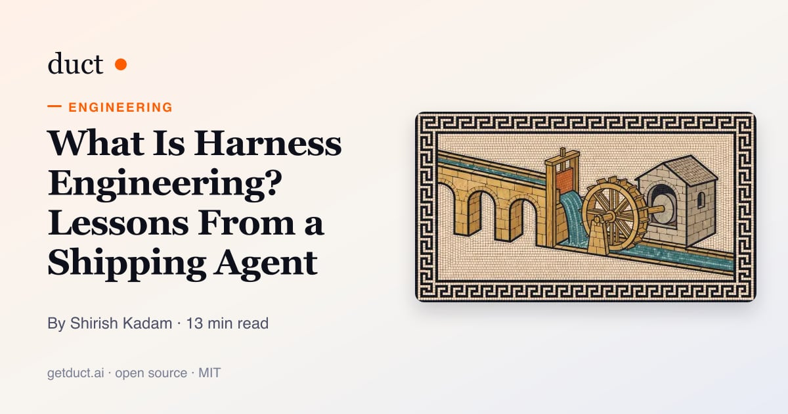
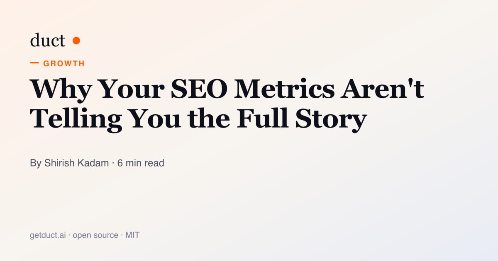
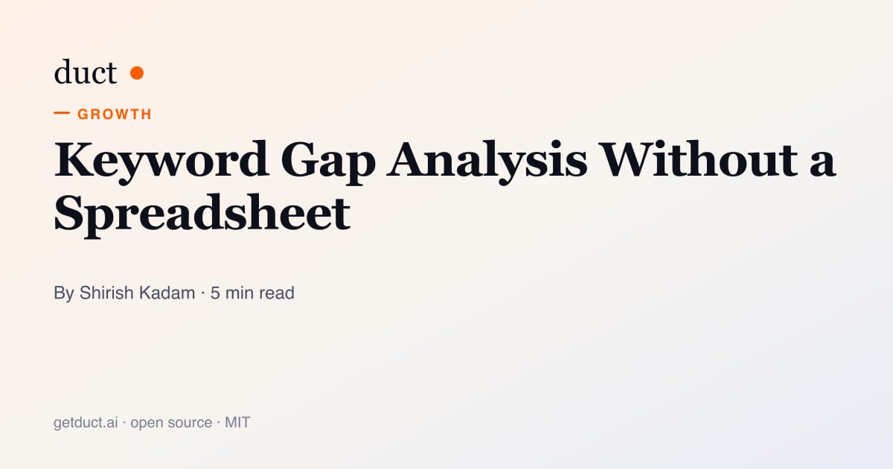

What your tools don't tell you
on their own.
Guides to running growth without a data team, and notes on building Duct's open-source agent in the open.
-

EngineeringWhat Is Harness Engineering? Lessons From a Shipping Agent
We read the most-starred harness engineering list against Duct's own agent. A day later: two bugs fixed, an eval gate shipped, and four broken entries found in the list itself.
-

GrowthWhy Your SEO Metrics Aren't Telling You the Full Story
Search Console shows impressions up. Ahrefs shows rankings rising. GA4 says signups are flat. How to read all three together, and what the gap usually means.
-

GrowthKeyword Gap Analysis Without a Spreadsheet
The old way: export Ahrefs, paste into Sheets, cross-reference with your content calendar. The new way: know the gap before your Monday standup.